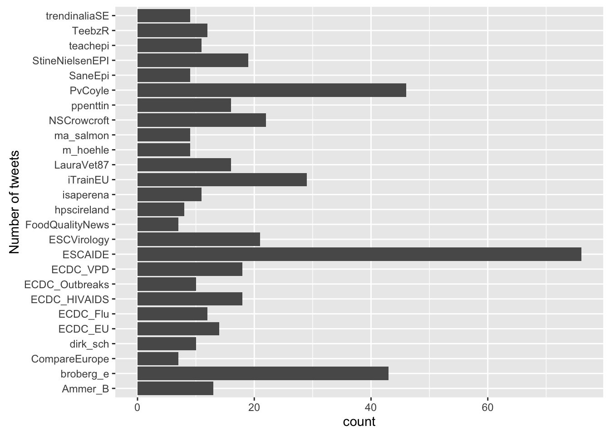
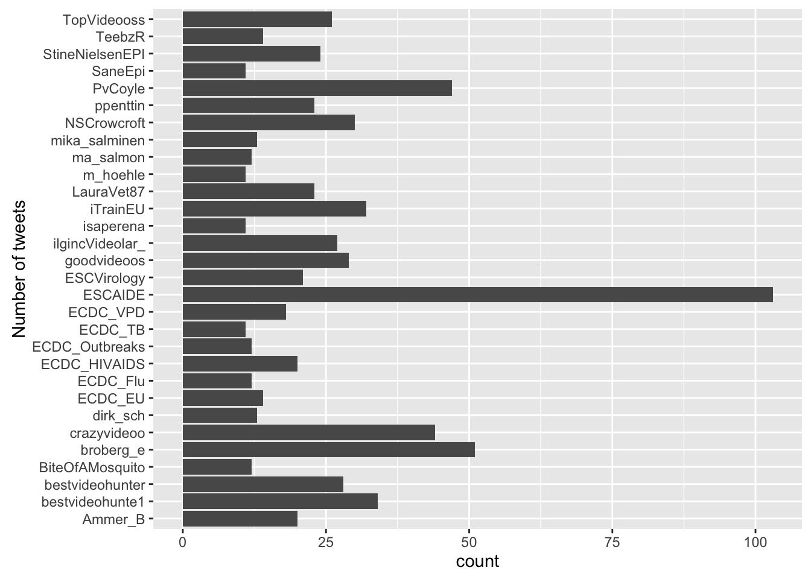

Monitor the Twitter Feed
The Hackathon Team
30 November 2016
This tutorial illustrates how one extracts data from twitter using R in order to quickly establish a tweet based monitoring system for critical event monitoring. We will use the rtweet package to harvest the data using the twitter API and subsequently monitor them with the surveillance package.
Setting up the twitter API
require(rtweet)
# A file containing the information of your twitter app. To protect the
# information stored here, this is kept outside the public git repository.
#
# The contents of the file are simply:
# twitter_token <- create_token(app = "zombiemonitor", # whatever you named app
# consumer_key = "2zIXXX4L6USa4UfXXXXXXXXXX",
# consumer_secret = "oXXXXXXXSwwXXXXXXXXXXXXXXsXXXXXXXmXXXXXXXX")
source("~/Sandbox/Twitter-Trends/auth-zombie.R",encoding="UTF8")Performing Queries
Perform the query, here we shall search for tweets containing the hashtag #ESCAIDE2016. The result is a list of individual tweets – this is almost similar to the well known concept of a linelist:
the_query <- "#ESCAIDE2016"
tweets <- search_tweets(the_query, n = 15000, type="recent", token = twitter_token)
head(tweets)A total of 529 tweets were collected.
Descriptive Analysis
Who’s tweeting - top 25 users:
library(ggplot2)
library(tidyr)
top_tweeters <- tweets %>% group_by(screen_name) %>%
summarise(nTweets=n()) %>%
arrange(desc(nTweets)) %>%
top_n(n=25)
ggplot( top_tweeters, aes(x=screen_name,weight=nTweets)) + geom_bar() + coord_flip() + xlab("Number of tweets")Distribution of the system used for the tweeting:
ggplot( tweets, aes(source)) + geom_bar() + coord_flip()
Time series of the tweets (without interruptions):
require(lubridate)
ts <- tweets %>%
mutate(hour = sprintf("%.02d",hour(created_at)), day=day(created_at),month=month(created_at),year=year(created_at)) %>%
unite("time",c(year,month,day,hour)) %>% mutate(time2=factor(time)) %>%
count(time2) %>% mutate(time3 = 1:n())
ggplot(ts, aes(x=time2, weight=n)) + geom_bar() + theme(axis.text.x=element_text(angle=90, hjust=1)) + ylab("No. of tweets") + xlab("Time")
Aggregate data into hourly intervals for each conference day:
library(lubridate)
library(scales)
tweets <- tweets %>% mutate(day = factor(day(with_tz(created_at, "EST"))))
tweets %>%
count(day, hour = hour(with_tz(created_at, "CET"))) %>%
ggplot(aes(hour, n, color = day)) +
geom_line() +
labs(x = "Hour of day (CET)",
y = "No. of tweets",
color = "")